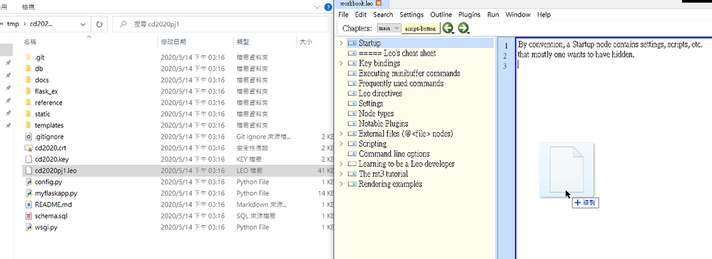
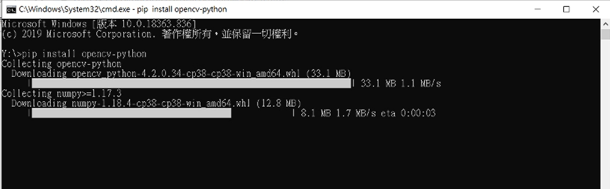
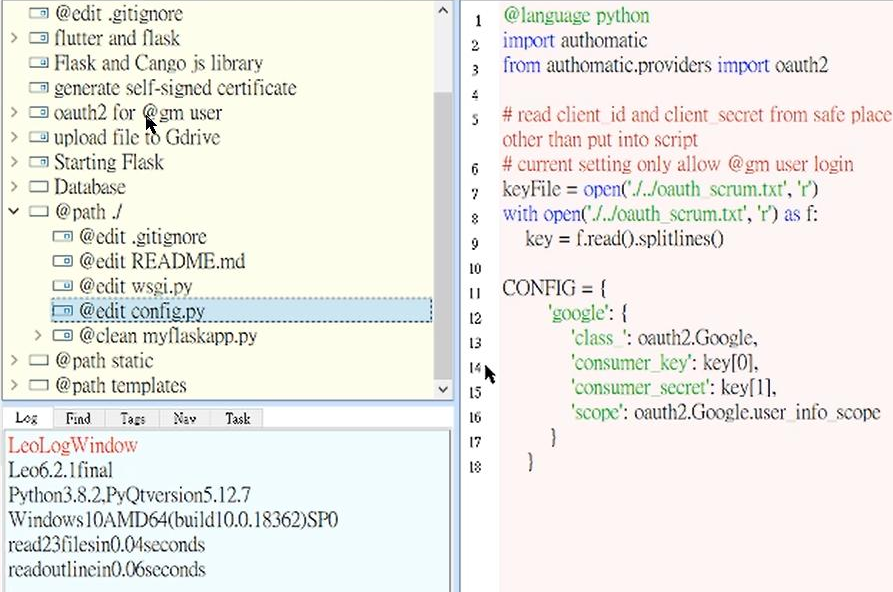

Week6-9 <<
Previous Next >> week15-18
Week10-14
期中報告
w10開會紀錄:
topic2:
coppeliasim:40723221
MSModelingAndTFApproaches.pdf. 207頁:7人
40723249
40623117
40723221
40723228
40723236
40723237
40723243
MechatronicDesignCases.pdf. 46頁:2人
40723222
40723244
topic3:
MechaFutureAndChallenges.pdf. 38頁:2人
40623252
40523253
MechaEducFutureNeed.pdf. 20頁:1人
40723240
參考資料:
CMS:http://mde.tw/cd2020pj1/content/CMS.html
google用戶設置影片:https://drive.google.com/file/d/1G4MzXUIbNRK7z2XdjtxXzhX51zHHwq85/view?usp=sharing
開會紀錄影片:
google用戶端登入程序說明及疑難排解{影片經過加速處理}
1.
Log in to your google account {school's}
2.
Go to https://console.developers.google.com
3.
Create a Google API project and accept the required project
4.
Implement and enable Google's API
5.
Select the consent button in Google Domain API
6.
Choose internal or {external} users to add new application porgram
7
Enter the credentials under API and service
8.
Create credentials of type "OAuth 2.0 Client ID" for web applications
9.
(Set URL) The authorized JavaScript is: https: // localhost: 8443
10.
Define the URI as: https: // localhost: 8443 / login / google /
11.
Save oauth_gm.txt
12.
Open leo to change the name of the txt file named scrum in the config, and press save and darwROC after the modification is completed
13.open https://localhost:8443
14.test the end
GOOGLE 用戶端影片參考
  
For ubuntu settings explain.
1. Download ubuntu
2. Add a NAT network to your favorite network
3. Import the ubuntu you just downloaded
4. The add-on setting in the network in settings is set to host-only
5. Start ubuntu
6. Password kmol2020
7. Click activites on the upper right and click show application
8. Click LX terminal
9. Enter xterm &
10. Enter ls to display data
11. Press ctrl + right button to select the size of the window
12. Enter cd coppeliasim4_rev4 in the folder
13. Enter ls to view the information in the folder
14. Enter cd CoppeliaSim_Edu_V4_0_0_ubuntu18_04
15. Enter again./coppeliaSim.shf
16.You can refer to the following ubuntu video .
17.you can dowonload from this website:http://mde.tw/cd2020pj1/content/Ubuntu.html
自製影片教學:{有字幕可打開}
[Ubuntu][Linux][教學] 安裝設定#02. [跨平台] 於VirtualBox上安裝Ubuntu18.04與安裝中
Ubuntu 20.04 For Windows Users
How to make Ubuntu picturesque-Ubuntu beautification tutorial-fully open sourceweek11
For week11 meeting
Download ubuntu Add a NAT network to your favorite network Import just downloaded ubuntu Attach to the network in the settings is set to host-only Start ubuntu Password kmol2020 Click on activites in the upper right and click show application Click LX terminal Type xterm & Enter ls to display data Press ctrl + right click to select the window size Enter cd coppeliasim4_rev4 in the folder Enter ls to view the information in the folder Enter cd CoppeliaSim_Edu_V4_0_0_ubuntu18_04 Then enter./coppeliaSim.sh Open coppeliasim and import sdc.ttt, then open the CoppeliaSim_4_Self_Driving_Car_Simulation.7z just downloaded Open the car_model.py in the editor When finished, press tool> go Coppeliasim in ubnutu should also start the simulation After success, the four-wheeled vehicle in the sdc.ttt file should run in a circle.
For ubnutu setting and connecting video
補充:解決有關帳號git push後學號錯誤問題
step1:修改記事本內的學號step:2{錯誤修改後再次push學號變為正確}
如何用簡易軟體製作浮水印
week12
week12會議
1. Remind each team member that they must execute assignment3 and submit it next week
2. ubnutu external network connectionubnutu external connection (ipv6)
1. Set IPv6 and host network to work normally
2. After starting ubnutu, open Lxtermialermial and enter cd / etc
3. Follow the path and enter cd apt> cd apt.conf.d
4.pt> CD apt.conf.d
5. Enter sudo vi proxy.conf, enter the password kmol202011 and use the i key to enter edit mode.
6. Enter Acquire :: http: proxy "http: /// [2001: 288: 6004: 17: 53]: 3128";
7. Press esc and use: wq to save, then use sudo apt update apt update to update apt
8.ifconfig> sudo apt install network tools, cd etc./netplan
9. Enter sudo vi 00-installer-config.yaml and change the indentation as shown in the movie
10. Enter ping6 2001: 288: 6004: 17 :: 254 to test whether you can connect to the external network
11. Add the port number
12. Enter ifconfig to query visitors under ipv6
13. Type sudo vi wsgi.py wsgi.py to change the near-end host to ::
14. Type python3 wsgi.py
15. Use the conventional method to open the near end https: // [:: 1]: 18443 If you want to start from the back door, please add / login
16. Open leo to add upload settings for ttt files
17. Test whether it can be uploaded
影片參考:
ipv4 ubuntu
說明:
The password for logging into ubnutu is kmol2020
Then open the Lx terminal and enter ifconfig and enter sudo apt install net-tools Enter the password for kmol2020 Enter ping 127.0.0.1 Test to see if you can enter into the cd2020pj1 folder and git pull enter sudo vi wsgi.py and press i to edit the content Set the host edit to 10.0.0.4 press esc and enter: wq to access the folder location in the video. Take the cd2020pj1.leo file and open it with leo. Use nav to find the allowext7 file location and add the ttt file. Type sudo under tmp vi oauth_scrum.txt
Type python3 wsgi.py
Enter https://127.0.0.1:18443/alogin to enter the back door and enter admin to test whether the ttt file can be uploaded
版本問題解決:
week13 meeting
week14 meeting
filezilla settings
Filezilla download (portable): https://portableapps.com/apps/internet/filezilla_portable set putty
1. Set putty
2. The set ip is the ip you set in the virtual host. In the school, you need to use the setting under ipv6
3. After Putty is successfully enabled, enter kmol2020 and password also enter kmol2020
4. Open filezilla
5. Add a new platform
6. Set the protocol SFTP and host 127.0.0.1 and port 22 and user kmol2020
7. Enter the password kmol2020
8. After setting, you can download and upload the virtual host data here


assignment3:
Multi-physics High-end mechatronic systems such as wafer scanners such as that of Fig. 2.3 for optical lithography or electron scanning probes and in space applications and scientific instrumentation, have an error budget that is getting closer to being a flat distribution over the various sources. For instance, for modern wafer scanners thermal and cooling-fluids-induced vibrations now are as significant as mechanical modal vibrations excited by the actuators. This has to do with the extreme conditions and requirements; moving an 80 kg mass with accelerations more than 10 g, and achieving accuracies below nanometres with mKelvin temperature variation [3]. This means that the ‘normal’ mechatronics and its motion control systems now start to have a dynamic interaction with the thermal and fluid control dynamics. The overall performance assessment and design improvements now start to cover not only mechanical and electrical/electronic and software disciplines, but also physics issues like thermal and fluid partial differential equation-based modelling. And what will be the impact for mechatronics design thinking when we include the possibilities of additive manufacturing? If a 3D industrial metal or ceramics printer can be used to freely shape our mechanisms, how to arrive at an overall optimal design?
多物理場高端機電一體化系統（例如用於光學光刻或電 子掃描探針的圖 2.3 中的晶圓掃描器）以及在空間應用 和科學儀器中的誤差預算越來越接近於在各種情況下的 平面分佈資料來源。例如，對於現代晶圓掃描儀，現在 由熱和冷卻流體引起的振動與由致動器激發的機械模態 振動一樣重要。這與極端條件和要求有關；移動 80 千 克質量的加速度超過 10 克，並通過 mKelvin 溫度變化 實現低於納米的精度[3]。這意味著“常規”機電一體化 及其運動控制系統現在開始與熱和流體控制動力學產生 動態相互作用。現在，整體性能評估和設計改進不僅涵 蓋機械和電氣/電子和軟件學科，而且還涉及物理問題， 例如基於熱和流體偏微分方程的建模。當我們將增材製 造的可能性包括在內時，這會對機電一體化設計思想產 生什麼影響？如果可以使用 3D 工業金屬或陶瓷打印機自由調整我們的機構形狀，那麼如何獲得整體最佳設 計？
The performance trade-off can now only be lifted to the next level if we are able to handle this complexity by proper systems engineering and the inclusion of more disciplines. In Fig. 2.4 this trend is depicted in the form of a performance versus resources plot. Resources could be money, people, development time, computer power, energy, etc. The performance typically is accuracy, throughput and robustness/ reliability. The curve shows that achieving more performance does cost more and more resources, until not feasible. In the figure, examples are also plotted; first, a simple transmission gear system, having low performance (in terms of accuracy) and also requiring limited resources. The second, example in the figure is a modern wafer scanner as the example of extreme performance and needing huge resources. The curve implies that in order to further boost innovation, we need to incorporate two means. First, by addressing all relevant disciplines, so including for instance physics, we will be able to increase performance. Second, by introducing a systems engineering approach we can handle complexity in a better way, and hence, go left on the resources axis.
如果我們能夠通過適當的系統工程和更多學科來處理這 種複雜性，那麼現在只能將性能折衷提升到一個新的水 平。在圖 2.4 中，以性能與資源圖的形式描述了這種趨 勢。資源可以是金錢，人員，開發時間，計算機能力， 能源等。性能通常是準確性，吞吐量和魯棒性/可靠性。 曲線表明，達到更高的性能確實會花費越來越多的資 源，直到不可行為止。在圖中，還繪製了示例。首先， 一種簡單的變速器齒輪系統，具有低性能（就精度而言） 並且還需要有限的資源。圖中的第二個示例是現代晶圓 掃描儀，作為極端性能和需要大量資源的示例。曲線表 明，為了進一步促進創新，我們需要結合兩種方法。首 先，通過解決所有相關學科，例如物理問題，我們將能 夠提高性能。其次，通過引入系統工程方法，我們可以 以更好的方式處理複雜性，因此在資源軸上就走了。
2.5 Robotics Almost opposite to the high-end systems as described above, the robotics field also influences the mechatronics area. Here, it is not the multi-physics discipline that is required, but the computer science field to cope with unstructured and changing environments. In robotics, the developments are directed towards vision, mapping, and localization, so understanding the environment (‘world modelling’) but also the field of Artificial Intelligence (AI)—which has already been a promise for decades, but could evolve rapidly in coming years. Both areas are currently in an accelerating phase because of the upcoming autonomous vehicles. The disruption seen in the automotive industry is huge, both in the area of power trains (i.e. electric drives and transmissions), and the use of computer science, as for instance the sensors in a modern car, including the rapid developments in autonomous functions implemented in passenger cars as well as in commercial vehicles. This in fact is all about mechatronics, AI, controls! The field of robotics, including autonomous cars, could be treated as a separate research area, next to mechatronics, but for instance the speed requirements of industrial robots or the accuracy requirements of surgical robots such as the Preceyes robot of Fig. 2.5 necessitate the inclusion of the description of the dynamic behaviour of the robots. The change from rigid body modelling towards flexible systems, then directly makes it in the heart of mechatronics. The same holds for the systems engineering thinking and the system topology optimization, which is also similar in hybrid power trains for vehicles. So where does mechatronics end and robotics start?
2.5 機器人技術與上述高端系統幾乎相反，機器人技術 領域也影響著機電一體化領域。在這裡，不是需要多物 理學科，而是計算機科學領域來應對非結構化和不斷變 化的環境。在機器人技術方面，開發主要針對視覺，地 圖和本地化，因此不僅要了解環境（“世界建模”），還要 了解人工智能（AI）領域，這已經是數十年的承諾，但 在未來可能會迅速發展。未來幾年。由於即將推出的自 動駕駛汽車，這兩個領域目前都處於加速階段。在動力 總成（即電力傳動和變速箱）領域以及計算機科學的應 用（例如現代汽車中的傳感器）領域，汽車行業的破壞 是巨大的，包括實現的自主功能的迅速發展在乘用車和 商用車中實際上，這一切都與機電一體化，人工智能， 控制有關！機器人技術領域（包括自動駕駛汽車）可以被視為機電一體化領域之外的一個單獨的研究領域，但 是例如，工業機器人的速度要求或外科機器人（例如圖 2.5 的 Preceyes 機器人）的精度要求必須包括在內。機 器人動態行為的描述。從剛體建模到柔性系統的轉變， 直接使其成為機電一體化的核心。系統工程思想和系統 拓撲優化也是如此，在車輛的混合動力系統中也是如 此。那麼機電一體化在哪裡結束而機器人技術在哪裡開 始呢？
2.6 Cyber-Physical Systems, Smart Industry and the Internet of Things The shift from decentralized mechatronic systems towards networked connected systems is known as the field of cyber physical systems, referring to the field of cybernetics. The research questions are how to guarantee stability Fig. 2.5 The Preceyes eye surgery robot [5] 2 Mechatronics Disrupted 23 and performance during or after packet (information) loss, and how to deal with variable delays. The domain is even further away from the hardware of mechatronics, but is developing so rapidly, that we should ask the question how to embrace to potential of network-controlled systems, for instance in the field of remote condition monitoring and servicing. In the next decade, the explosion of the Internet of Things (IoT) further necessitates finding the answers to this question [6]. One application where mechatronics will meet IoT is in the future of our manufacturing. The Industry 4.0 or Smart Industry attention is about networked modern industrial automation. • What does it mean for the flow of goods through a manufacturing plant if knowledge of the logistics is shared, if the performance of one workstation is optimized as part of the total logistics or operation, if service and repair in a production facility is robust because workstations are flexible and can adapt? • What does this imply for the industrial robotics and smart mechatronic production devices? • How will this impact the design requirement of our mechatronic devices and products? The Internet of Things will not only change the modern factory. It is estimated that in 2020, 50 billion devices will be connected to internet. This means it will be entering our households and equipment used at home, as well as our cars. When wearable electronics are pushed further, and we are surrounded by sensors, we only need the step towards actuation to be able to closed the loop and by that enter the world of mechatronics again [6]!
2.6 網絡物理系統，智能產業和物聯網從分散的機電一 體化系統向聯網的系統的轉變被稱為網絡物理系統領 域，指的是控制論領域。研究的問題是如何保證穩定性。 圖 2.5 Preceyes 眼科手術機器人[5] 2 Mechatronics Disrupted 23 和數據包（信息）丟失期間或之後的性能， 以及如何處理可變延遲。該領域甚至離機電一體化的硬 件還很遠，但是發展如此之快，以至於我們應該問一個 問題，即如何在遠程狀態監視和服務領域中將網絡控制 系統的潛力納入其中。在接下來的十年中，物聯網（IoT） 的爆炸式增長進一步要求找到該問題的答案[6]。機電一 體化將滿足物聯網的一個應用是我們製造業的未來。工 業 4.0 或智能工業的關注點是關於聯網的現代工業自動 化。 •如果共享物流知識，優化一個工作站的性能作為 整個物流或運營的一部分，如果生產設施中的服務和維 修可靠，則對於通過製造工廠的貨物流意味著什麼？工 作站是否靈活並且可以適應？ •這對工業機器人和智能 機電一體化生產設備意味著什麼？ •這將如何影響我們 的機電設備和產品的設計要求？物聯網不僅會改變現代 化的工廠。據估計，到 2020 年，將有 500 億台設備連 接到互聯網。這意味著它將進入我們的家庭，家用設備 以及汽車。當可穿戴電子設備被進一步推動時，我們被 傳感器所包圍，我們只需要朝致動邁出一步就能夠閉合 迴路，從而再次進入機電一體化領域[6]！
2.7 Towards Systems Integration Overseeing these developments we could question what mechatronics actually is or will be. Is mechatronics being disrupted? Has it evaporated already into systems engineering, is it part of the supporting disciplines, does it enlarge to be the backbone of cyber physics? Moreover, if biological systems are also going to have technical devices implemented (Internet of Humans), what is then the role of the mechatronics discipline? How should we educate people in mechatronics thinking, how small or how broad? In Fig. 2.6 the role of systems engineering is used to enable the necessary integration of the disciplinary as well as the technological contributions. In this book many of the mentioned developments will be addressed. We will not have definite answers for the future of mechatronics, nor for its education, but we learn also that this should be robust and adaptable because we cannot predict the future! We know for sure that the pace of technological development is accelerating, hence, so should we! References 1. Munnig Schmidt R, Schitter G, van Eijk J (2011) The design of high performance mechatronics. Delft University Press, The Netherlands 2. Silvas E, Hofman T, Serebrenik A, Steinbuch M (2015) Functional and cost-based automatic generator for hybrid vehicles topologies. IEEE/ASME Trans Mechatron 20(4):1561–1572 3. Butler H (2011) Position control in lithographic equipment: an enabler for current-day chip manufacturing. IEEE Control Syst Mag 31(5):28–47 4. Steinbuch M, Pahnke K, High Tech Systems Centre. Eindhoven University of Technology. http://www.tue.nl/htsc 5. Meenink HCM (2011) Vitreo-retinal eye surgery robot: sustainable precision. PhD thesis, Eindhoven University of Technology 6. Bradley D, Russell D, Ferguson I, Isaacs J, MacLeod A, White R (2015) The internet of things—the future or the end of mechatronics. Mechatronics 27:57–74
2.7 邁向系統集成監督這些發展，我們可能會對機電一 體化的實際狀況或未來狀況提出疑問。機電一體化是否 受到干擾？它已經蒸發到系統工程中了嗎，它是否是支 持學科的一部分，它是否擴大成為網絡物理的中堅力 量？此外，如果生物系統也要實現技術設備（人類互聯 網），那麼機電一體化學科的作用是什麼？我們應該如 何在機電一體化思維方面對人們進行教育？在圖 2.6 中，使用系統工程的作用來實現學科和技術貢獻的必要 整合。在本書中，許多提到的發展將得到解決。我們不 會對機電一體化的未來及其教育有確切的答案，但是我 們也知道，由於我們無法預測未來，因此它應該是強大 且適應性強的！我們肯定知道技術發展的步伐正在加 快，因此，我們也應該如此！參考文獻 1. Munnig Schmidt R，Schitter G，van Eijk J （2011）高性能機電一體化設計。荷蘭代爾夫特大學出 版社。2. Silvas E，Hofman T，Serebrenik A，Steinbuch M（2015）基於功能和基於成本的混合動力汽車拓撲自 動發電機。 IEEE / ASME Trans Mechatron 20（4）： 1561-1572 3. Butler H（2011）光刻設備中的位置控制： 當今芯片製造的推動力。 IEEE Control Syst Mag 31 （5）：28–47 4. Steinbuch M，Pahnke K，高科技系統 中心。埃因霍溫科技大學。 http://www.tue.nl/htsc 5. Meenink HCM（2011）玻璃體-視網膜眼科手術機器人： 可持續的精度。埃因霍溫科技大學博士學位論文。6. Bradley D，Russell D，Ferguson I，Isaacs J，MacLeod A， White R（2015）物聯網—機電一體化的未來或終結。 機電一體化 27：57–74 Chapter 3 Future Challenges in Mechatronics Nicolas Albarello, Alexandre Arnold and Marc Budinger 第三章機電一體化的未來挑戰
3.1 Introduction In the aerospace industry, mastering the design of mechatronic systems is a major requirement. Indeed, a big part of programme cost is spent on the design of these systems, which also represent a big part of the product performance. In this chapter, some of the main challenges that industries will face in coming years in the field of mechatronics are exposed. These challenges deal with the design of mechatronic systems, their verification/validation and their operation. 3.2 Challenges in Design—Architecture and Sizing 3.2.1 Using Models to Size an Architecture The physical architecture of embedded technological systems such as the electromechanical actuators of flight control systems, Fig. 3.1a [1] or power electronic modules of supply network, Fig. 3.2b [2], are an association of components from different technologies. Work by Van der Auweraer et al. [3] and Hehenberger et al. [4] highlights that the design of such multi-domain systems requires different modelling layers as represented in Fig. 3.2: • A mechatronic layer has to take into account the functional and physical coupling between components. This level of modelling is usually done using 0D/1D
3.1 簡介在航空航天工業中，掌握機電一體化系統的設 計是一項主要要求。確實，程序成本的很大一部分花在 了這些系統的設計上，這也代表了產品性能的很大一部 分。在本章中，我們將揭露工業界在機電一體化領域未 來幾年將面臨的一些主要挑戰。這些挑戰涉及機電系統 的設計，其驗證/確認及其操作。 3.2 設計中的挑戰-體 系結構和規模調整 3.2.1 使用模型確定體系結構的大小 嵌入式技術系統的物理體系結構，例如飛行控制系統的 電動執行器，圖 3.1a [1]或供電網絡的電力電子模塊， 圖 3.2b [2]是來自不同技術的組件的關聯。 Van der Auweraer 等人的工作。 [3]和 Hehenberger 等。 [4]強 調了這種多領域系統的設計需要不同的建模層，如圖 3.2 所示：•機電一體化層必須考慮組件之間的功能和物 理耦合。通常使用 0D / 1D 完成此級別的建模 ---------------------------------------- N. Albarello (*) · A. Arnold Airbus Group, Toulouse, France e-mail: Nicolas.albarello@airbus.com M. Budinger INSA Toulouse, ICA, University of Toulouse, Toulouse, France N. Albarello（*）·A. Arnold 空中客車集團，法國圖盧茲， 電子郵件：Nicolas.albarello@airbus.com M. Budinger INSA 法國圖盧茲大學，ICA，圖盧茲，ICA © Springer International Publishing Switzerland 2016 P. Hehenberger and D. Bradley (eds.), Mechatronic Futures, DOI 10.1007/978-3-319-32156-1_3 © 瑞士施普林格國際出版公司 2016 P.Hehenberger 和 D.Bradley（編），機電一體化期貨，DOI 10.1007 / 978-3-319-32156-1_3 Fig. 3.1 Multi-domain architecture of an embedded system 圖 3.1 嵌入式系統的多域架構 Fig. 3.2 Hierarchical design models (after Hehenberger et al. [4]) 圖 3.2 分層設計模型（根據 Hehenberger 等[4]）
models [3], also called lumped parameter models, represented by algebraic equations, ordinary differential equations (ODE) or differential algebraic equations (DAE). • A specific domain layer to describe the performance limits and parameters is necessary in the previous layer, based on a geometric representation. The specific domain phenomena are generally represented through partial differential equations (PDE). This level of modelling can be achieved for simplified geometries using analytical models or, for complex 2D and 3D geometries, for instance by using numerical approximations such as finite element methods (FEM). The design of the power element with a system integrator’s point of view should allow for the optimizing of the size and specification of components from multiple technologies interacting together. This system-level design, distinct from component design, needs to represent in the mechatronic layer the key information of the specific domain layer with dedicated models [5–7]. Referred to as “estimation models” by Budinger et al. [7], they enable the designer to readily take multiple design constraints into account. The models Fig. 3.1 Multi-domain architecture of an embedded system Fig. 3.2 Hierarchical design models (after Hehenberger et al. [4]) 3 Future Challenges in Mechatronics 27 directly and explicitly link a few primary characteristics, such as overall dimensions of components, to the secondary characteristics needed for the sizing [5] and optimization [1]. The capacities required of these estimation models are as follows: • To present a form that is simple to handle and to implement in different calculation tools. • To lend themselves to easy analytical manipulations. • To be reusable in an area slightly different from the one where they were initially employed. To satisfy these constraints, simplified analytical models are often used. Among these, scaling laws have proved effective in representing a physical phenomenon over wide ranges of variation [6]. However, these models are only valid under certain conditions, among which one can mention geometry and material similarities and uniqueness of the driving physical phenomenon. For the system designer the models should be as predictive as possible. Detailed finite element models, able to precisely predict the physical phenomena, are still much time-consuming in such a context. Despite a recent thrust of work on model order reduction, the computational cost of finite element models remains prohibitive in the preliminary design phase. The use of meta-modelling techniques [7, 8] is thus interesting for this purpose. A challenge for mechatronic design is the development of meta-modelling techniques specifically dedicated to the selection of components of system from an integrator point of view. A paper by Budinger et al. [7] proposes a meta-modelling method based on scaling laws which extract simple, global expressions of estimation models from local numerical simulations (FEM).
模型[3]，也稱為集總參數模型，由代數方程，常微分方 程（ODE）或微分代數方程（DAE）表示。 •基於幾何 表示，在上一層中需要一個特定的域層來描述性能極限 和參數。特定域現象通常通過偏微分方程（PDE）表示。 對於這種水平的建模，可以使用解析模型來簡化幾何， 或者對於復雜的 2D 和 3D 幾何，例如通過使用數值逼近 法（例如有限元方法（FEM））來實現。從系統集成商 的角度出發，功率元件的設計應允許通過多種相互作用 的技術來優化組件的尺寸和規格。該系統級設計與組件 設計不同，需要在機電一體化層中使用專用模型來表示 特定領域層的關鍵信息[5-7]。被 Budinger 等人稱為“估 計模型”。 [7]，它們使設計人員能夠輕鬆考慮多個設 計約束。模型圖 3.1 嵌入式系統的多域體系結構圖 3.2 分層設計模型（根據 Hehenberger 等人的觀點[4]）3 機 電一體化領域的未來挑戰 27 直接和明確地鏈接了一些 主要特徵，例如組件的整體尺寸，到中學調整大小[5] 和優化[1]所需的特性。這些估計模型所需的能力如下：• 提出易於處理並在不同計算工具中實施的表格。 •使自 己易於進行分析操作。 •可在與最初使用它們的區域稍 有不同的區域中重複使用。為了滿足這些約束，通常使 用簡化的分析模型。其中，比例定律已被證明可以有效 地代表大範圍變化中的物理現象[6]。但是，這些模型僅 在特定條件下有效，其中可以提到幾何形狀和材料相似 性以及行駛物理現象的唯一性。對於系統設計人員而 言，模型應盡可能具有預測性。在這種情況下，能夠精 確預測物理現象的詳細有限元模型仍然很耗時。儘管最 近有工作在減少模型階數上，但在初步設計階段，有限 元模型的計算成本仍然很高。因此，為此目的使用元建 模技術[7，8]很有意思。機電設計的挑戰是開發元建模 技術，該技術專門用於從集成商的角度選擇系統組件。 Budinger 等人的論文。 [7]提出了一種基於比例定律的 元建模方法，該方法從局部數值模擬（FEM）中提取估 計模型的簡單全局表達式。
3.2.2 Coupled Disciplines for the Design of Mechatronic Systems The design of systems as those in Fig. 3.1 is driven by the following main aspects to meet the various requirements: integration (mass, geometrical envelope) between airframe and actuated load, resistance to environment (thermal and vibration), instant power and energy saving, dynamic performance, service life, reliability, resistance to or tolerance of failures. Table 3.1 summarizes these different design viewpoints and the possible associated modelling levels for a model-based design. These multiple design viewpoints generate real challenges when optimizing such systems. To take account of these criteria in the same loop, tools coming from multidisciplinary design optimization (MDO) can be useful [8]. MDO is a field of engineering that uses statistical and optimization methods to solve design problems incorporating all relevant disciplines represented by 2D/3D FEM. 3.2.2 機電系統設計的耦合學科如圖 3.1 所示，系統的設 計受到以下主要方面的驅動，以滿足各種要求：機身與 驅動負載之間的集成（質量，幾何包絡），對環境的抵 抗力（熱和振動），瞬時功率和節能，動態性能，使用 壽命，可靠性，抗故障性或容錯性。表 3.1 總結了這些 不同的設計觀點以及基於模型的設計可能的關聯建模級 別。優化此類系統時，這些多種設計觀點產生了真正的 挑戰。為了在同一循環中考慮這些標準，來自多學科設 計優化（MDO）的工具可能會有用[8]。 MDO 是工程領 域，它使用統計和優化方法來解決包含 2D / 3D FEM 代 表的所有相關學科的設計問題。 Table 3.1 Design views and associated modelling levels during design of mechatronics systems, an example of a flight control actuator 表 3.1 機電一體化系統設計期間的設計視圖和相關的建 模級別，這是飛行控制執行器的一個示例 analyses, 0D/1D simulations and algebraic calculations simultaneously. Each specific computation is considered as a black box which can be called directly, analysed with design of experiments (DoE). All calculations can be linked together and used for design exploration, sensitivity, optimization and robustness analyses; iSight [9], Optimus [10] and ModelCenter [11] are examples of such frameworks. Optimization tasks require a small computational time for the models. The surrogate models or meta-models [8], simplified or approximate descriptive model of another model, can be used for representation of specific domain layer models (FEM) into the mechatronic layer. The mechatronics layer generally treats dynamic systems in the time domain and uses transient time simulation but methods relying on approximating the time domain behaviour by evaluating the dominant harmonics of the load profile [12] can be attractive during optimization of the design. These optimization and statistical enabling tools allow the steps of the design process to be linked in a freely chosen sequence. They do not, however, provide help in choosing how the connections in the calculations are structured, or which parameters are to be taken into account as design parameters, constraints or objectives.
同時進行 0D / 1D 模擬和代數計算。每個特定的計算都 被視為一個黑匣子，可以直接調用它，並通過實驗設計 （DoE）進行分析。所有計算都可以鏈接在一起，並用 於設計探索，靈敏度，優化和穩健性分析； iSight [9]， Optimus [10]和 ModelCenter [11]是此類框架的示例。優 化任務需要較少的模型計算時間。替代模型或元模型[8] 是另一種模型的簡化或近似描述模型，可以用於表示機 電一體化層中的特定領域層模型（FEM）。機電一體化 層通常在時域中處理動態系統，並使用瞬態時間仿真， 但是在設計優化期間，依靠評估負載曲線的主要諧波來 近似時域行為的方法[12]可能很有吸引力。這些優化和 統計支持工具允許以自由選擇的順序鏈接設計過程的步 驟。但是，它們在選擇如何構造計算中的連接或將哪些 參數作為設計參數，約束或目標考慮在內時沒有提供幫 助。
3 Future Challenges in Mechatronics 29 Knowledge-based engineering (KBE), a discipline which combines knowledgebased approaches and computer-aided design, can also be useful for design support. KBE software packages are dedicated to centralizing all the know-how and expertise for the design of a specific product. Scientific concepts and methodologies used in these environments are as follows: • Knowledge bases and computer-aided design: the knowledge of the components is capitalized with un-oriented algebraic equations (declarative approach) [13]. These components can be easily assembled to describe different architectures. • Constraint networks, graph theory and optimization: the set of equations initially defined in declarative form is oriented in order to obtain a calculation procedure usable by an optimization algorithm. The adaptation or analysis of the equations may be supported by symbolic computations, interval calculations or artificial intelligence. These KBE tools can be: • Linked to a CAD software as in Genus Designer [14] which captures the configuration rules and performs process automation for Solidworks; • Dedicated to a specific domain as in Enventive [15] for the conceptual design of planar mechanisms (optimization, tolerance, sensitivity analysis); • Developed over several domains, as in the case for FST institute software (TUHH University) which, from the same basis, supports the preliminary design of lift mechanisms [16], hydraulic networks [17] and EMA of aircraft; • General, such as TKSolver [18], Ascend [19], Cades [20], Design 43 [21] or PaceLab suite [22] and are often declarative language that enables a set of algebraic equations to be used with different inputs depending on the design objectives. These tools can provide interesting and important help for the designer especially when the system becomes complex with multiple technologies. Paired with MDO tools and dedicated meta-modelling techniques, they might represent the future of the design of mechatronic systems.
3 機電一體化的未來挑戰 29 基於知識的工程（KBE）是 一門結合了基於知識的方法和計算機輔助設計的學科， 也可以為設計支持提供幫助。 KBE 軟件包專用於集中 特定產品設計的所有知識和專長。在這些環境中使用的 科學概念和方法如下：•知識庫和計算機輔助設計：使用 非定向的代數方程式（聲明性方法）將組件的知識大寫 [13]。這些組件可以輕鬆組裝以描述不同的體系結構。 • 約束網絡，圖論和優化：以聲明形式最初定義的一組方 程式經過定向，以便獲得可用於優化算法的計算程序。 可以通過符號計算，間隔計算或人工智能來支持對等式 的適應或分析。這些 KBE 工具可以是：•鏈接到 Genus Designer [14]中的 CAD 軟件，該軟件捕獲配置規則並為 Solidworks 執行過程自動化。 •如 Enventive [15]中所 述，專門用於平面機構的概念設計（優化，公差，靈敏 度分析）； •開發了多個領域，例如 FST 研究所軟件 （TUHH 大學），該軟件在相同的基礎上支持飛機升力 機構[16]，液壓網絡[17]和 EMA 的初步設計； •常規語 言，例如 TKSolver [18]，Ascend [19]，Cades [20]，Design 43 [21]或 PaceLab suite [22]，它們通常是說明性語言， 可以根據不同的輸入使用一組代數方程式在設計目標 上。這些工具可以為設計人員提供有趣而重要的幫助， 尤其是當系統由於多種技術而變得複雜時。結合 MDO 工具和專用的元建模技術，它們可能代表機電一體化系 統設計的未來。 3.2.3 Ability to Synthesize Optimal Architectures When designing a mechatronic system, numerous solutions can be envisaged at the architecture level. The task of selecting the most appropriate architecture is a complex task that is currently mainly done by manually defining, assessing and comparing envisaged architectures. The use of design synthesis and optimization techniques at the architecture level permits the designer to envisage a broader range of solutions, among which are potentially innovative ones, and to compare them on a formal basis (using well-defined metrics) in order to select the most appropriate one. Engineering design synthesis [23] is a set of techniques that leads to the synthesis of engineering artefacts (2D/3D shapes, architectures, etc) based on knowledge 30 N. Albarello et al. about the purpose of the artefact, its expected properties and design knowledge (explicitly formalized or extracted from prior designs). Optimization techniques iteratively modify some initial solutions (generally randomly generated) in order to optimize the characteristics of the tested solutions. However, they barely consider design knowledge in order to generate feasible solutions. Coupling design synthesis and optimization permits generation of feasible solutions and the finding of the most performing ones. It is generally more efficient than a manual process since the explored design space can be larger and since the process is not influenced by cognitive biases (e.g. beliefs). However, this requires an ability to assess any generated solution along with all the defined selection criteria (optimization objectives/constraints). Examples of the use of this type of techniques are for the design of robot arms [24], vacuum cleaners [25] or aircraft cockpits [26].
3.2.3 綜合最佳架構的能力在設計機電系統時，可以在架 構級別設想許多解決方案。選擇最合適的體系結構的任 務是一項複雜的任務，目前主要通過手動定義，評估和 比較設想的體系結構來完成。在體系結構級別使用設計 綜合和優化技術可以使設計人員設想更廣泛的解決方 案，其中包括潛在的創新解決方案，並在形式上進行比 較（使用定義明確的指標），以選擇合適的解決方案。 最合適的一個。工程設計綜合[23]是一套基於知識 30 N 的工程綜合（2D / 3D 形狀，建築等）綜合技術。關於 人工製品的目的，其預期特性和設計知識（明確地形式 化或從先前的設計中提取）。優化技術迭代地修改一些 初始解決方案（通常是隨機生成的），以優化所測試解 決方案的特性。但是，他們幾乎不考慮設計知識以生成 可行的解決方案。耦合設計綜合和優化可以生成可行的 解決方案，並找到性能最佳的解決方案。由於探索的設 計空間可能更大並且該過程不受認知偏見（例如信念） 的影響，因此它通常比手動過程更有效。但是，這需要 具有評估所有生成的解決方案以及所有定義的選擇標準 （優化目標/約束）的能力。這種類型技術的使用示例是 機器人手臂[24]，真空吸塵器[25]或飛機駕駛艙[26]的設 計。
3.2.4 Study of Safety and Availability in Mechatronic Systems Reliability, Availability, Maintainability and Safety (RAMS) criteria are often part of the study carried out during the design process. A number of such studies must be performed for each considered alternatives in order to quantify the performances of the different architectures with respect to these criteria (reliability, availability, maintainability, etc). Currently, these studies are carried out by specialists who build RAMS models of the mechatronic system and run analyses on them to generate conclusions. RAMS models are typically built using dedicated formalisms such as Petri nets, Bayesian networks, reliability block diagrams or more advanced languages such as Altarica [27] and Figaro [28]. In order to speed up the studies, it would be an advantage to link RAMS studies to (descriptive or behavioural) architecture models. Indeed, much information embedded in design models can be reused during RAMS studies. A first approach considers enriching design models with RAMS data (failure modes, reliability rates, etc) in order to be able to automatically generate RAMS models. For instance, SysML [29] models (with a specific profile) can be used to automatically compute the system-level failure rates [30]. Another approach considers linking design models to RAMS models in order to ensure the consistency of the RAMS model. In the frame of the MODRIO project [31], a prototype was developed to automatically generate Figaro models from Modelica [32] models and a Figaro knowledge base [33]. Modelica specific constructs are used to declare the correspondence with a Figaro block from the knowledge base and other necessary information.
3.2.4 機電系統中的安全性和可用性研究可靠性，可用 性，可維護性和安全性（RAMS）標准通常是設計過程 中進行的研究的一部分。為了針對這些標準（可靠性， 可用性，可維護性等）量化不同體系結構的性能，必須 對每種考慮的替代方案進行大量此類研究。當前，這些 研究由建立機電系統 RAMS 模型並對其進行分析以得 出結論的專家進行。 RAMS 模型通常使用專門的形式 來構建，例如 Petri 網，貝葉斯網絡，可靠性框圖或更 高級的語言，例如 Altarica [27]和 Figaro [28]。為了加 快研究速度，將 RAMS 研究與（描述性或行為）體系結 構模型聯繫起來將是一個優勢。實際上，RAMS 研究期 間可以重用設計模型中嵌入的許多信息。第一種方法考 慮使用 RAMS 數據（故障模式，可靠性比率等）豐富設 計模型，以便能夠自動生成 RAMS 模型。例如，SysML [29]模型（具有特定配置文件）可用於自動計算系統級 故障率[30]。另一種方法考慮將設計模型鏈接到 RAMS 模型，以確保 RAMS 模型的一致性。在 MODRIO 項目 [31]的框架中，開發了一個原型，以從 Modelica [32]模 型和 Figaro 知識庫[33]自動生成 Figaro 模型。使用 Modelica 特定的構造從知識庫和其他必要信息中聲明 與 Figaro 塊的對應關係。 3.2.5 Functional Virtual Representation of the Product The design and the integration of mechatronic systems is a multidisciplinary design process which requires multiple domains to collaborate and exchange information. In today’s very large companies and in the extended enterprise, mastering these information flows becomes essential for the efficiency of the design phase. One way of improving the communication between teams is to share a common virtual representation of the product that integrates all viewpoints. This representation permits the different teams to have a view on other team’s constraints, and to always have access to the latest version of the design. Also, it enables the consideration of impacts from other domains during simulations. An integrated view would also provide a more robust basis for decision-making since it would permit to have a view of all constraints and objectives of all concerned disciplines. The main technical enablers for this type of representation is the capability to exchange engineering data between different teams working with different tools and data formats and the capability to integrate models coming from different disciplines.
.2.5 產品的功能虛擬表示機電一體化系統的設計和集成 是一個多學科的設計過程，需要多個領域進行協作和交 換信息。在當今的大型公司和擴展型企業中，掌握這些 信息流對於提高設計階段的效率至關重要。改善團隊之 間溝通的一種方法是共享集成了所有觀點的產品的通用 虛擬表示。這種表示方式使不同的團隊可以查看其他團 隊的約束，並始終可以訪問設計的最新版本。此外，它 還可以在仿真過程中考慮來自其他領域的影響。綜合觀 點還可以為決策提供更堅實的基礎，因為它可以了解所 有相關學科的所有限制和目標。這種表示形式的主要技 術推動因素是能夠在使用不同工具和數據格式的不同團 隊之間交換工程數據，以及能夠集成來自不同學科的模 型的能力。 3.3 Challenges in Verification and Validation 3.3 驗證和驗證中的挑戰 3.3.1 Ability to Virtually Validate a System 3.3.1 虛擬驗證系統的能力
The verification of mechatronic systems is a very expensive task for industrials (especially in the aerospace industry). Indeed, it requires both the systems to be available and the development and manufacturing of test benches that are often not reusable from programme to programme. A means to reduce the cost of testing is virtual testing. This practice aims to develop virtual means (system models and system simulation environments) to test a system and verify its conformity to requirements. For instance, tests on real wings can be replaced by finite element models. The main benefit of virtual testing is cost, since virtual test benches generally cost much less than real test benches and are often reusable from one programme to another. Indeed, many systems are similar from programme to programme and their models can in general be adapted to meet the new design with a limited effort. A less obvious benefit is that virtual test benches permit the stimulation of the system in conditions that are closer from the real stimulation that the system will encounter during its lifecycle. For instance, on a wing bending test, loads are applied locally on the real test bench while they can be applied uniformly on the virtual one, thus representing real loads in a more accurate way. Some aspects (e.g. thermal effects) can be also considered more easily in a system model while they require very expensive means of testing if a real test is envisaged. To enable virtual testing, several aspects of the verification process must be well managed. First, of course, the validation of the model and of its simulation environment must be carried out. This can be done by comparison of results with test bench data or flight test data. In this aspect, model calibration and uncertainty management techniques are required.
機電一體化系統的驗證對工業界（尤其是在航空航天業 中）是一項非常昂貴的任務。確實，這既需要係統可用， 又需要開發和製造測試平台，而這些測試平台通常無法 在程序之間重複使用。降低測試成本的一種方法是虛擬 測試。該實踐旨在開發虛擬手段（系統模型和系統仿真 環境）來測試系統並驗證其是否符合要求。例如，實際 機翼上的測試可以用有限元模型代替。虛擬測試的主要 好處是成本，因為虛擬測試台的成本通常比實際測試台 低得多，並且通常可以從一個程序重用到另一個程序。 實際上，每個程序的許多系統都是相似的，並且它們的 模型通常可以通過有限的努力就可以適應新的設計。不 太明顯的好處是，虛擬測試台可以在比系統在其生命週 期中遇到的實際刺激更近的條件下刺激系統。例如，在 機翼彎曲測試中，將載荷局部施加在實際的試驗台上， 而載荷則可以均勻地施加在虛擬的試驗台上，從而以更 準確的方式表示實際載荷。在系統模型中，某些方面（例 如熱效應）也可以更輕鬆地考慮到，而如果需要進行實 際測試，則它們需要非常昂貴的測試手段。要啟用虛擬 測試，必須很好地管理驗證過程的多個方面。首先，當 然必須對模型及其仿真環境進行驗證。這可以通過將結 果與測試台數據或飛行測試數據進行比較來完成。在這 方面，需要模型校準和不確定性管理技術。
3.3.2 Formalize Model Requests to Model Suppliers More and more, models are used to perform verification and validation (V&V) activities on systems. These models are often designed by the suppliers of the system (internal or external customers). However, being able to state what is expected from the model in terms of functionalities, domain of validity, precision, etc is still a challenge. Indeed, the requester has a view on the overall simulation environment (i.e. other interacting models, simulation inputs, etc) that is rarely communicated to the model developer in a formal way. This often leads to several iterations before the expected model is actually supplied to the model requester. Recently, a model identity card was proposed as a standard description of model requests [34]. The MIC permits to describe some of the desired characteristics of the model in order to guide its development. First, interfaces of the model must be defined describing ports of the model and exchanged variables. Secondly, four sections of model information must be filled in as follows: Object—model name, granularity level, reference documents Object context usage—time computation, tool Method—model dimension, method, linearity Model quality—accuracy, verification, validation Another potential use of this type of standardized model specification is the reuse of existing models. Indeed, formalizing the characteristics of a model enables posterior searches in model databases and reuse of models in different contexts.
3.3.2 正式向模型供應商提供模型請求越來越多的模型 用於在系統上執行驗證和確認（V＆V）活動。這些模型 通常由系統的供應商（內部或外部客戶）設計。但是， 在功能，有效性範圍，精度等方面能夠陳述模型期望的 內容仍然是一個挑戰。實際上，請求者對總體仿真環境 （即其他交互模型，仿真輸入等）具有很少的看法，而 很少以正式的方式傳達給模型開發者。在將預期模型實 際提供給模型請求者之前，這通常會導致多次迭代。最 近，模型身份證被提出作為模型要求的標準描述[34]。 MIC 允許描述模型的某些所需特性，以指導模型的開 發。首先，必須定義模型的接口，以描述模型的端口和 交換的變量。其次，必須按以下方式填寫模型信息的四 個部分：對象-模型名稱，粒度級別，參考文檔對像上下 文用法-時間計算，工具方法-模型尺寸，方法，線性模 型質量-準確性，驗證，驗證另一個潛力這種類型的標準 化模型規範的使用是對現有模型的重用。實際上，對模 型的特徵進行形式化可以在模型數據庫中進行後搜索， 並可以在不同的上下文中重用模型。
3.3.3 Ability to Exchange and Seamlessly Integrate Models Between Industrial Partners In relation to the objective of building multi-system simulation platforms to verify mechatronic systems, a major element is the ability to exchange and integrate models. Currently, model integrators tend to force their suppliers to use one tool and to follow specific modelling procedures (e.g. AP2633 [35]). On their side, model suppliers would like to use their own tools to model the system. Being able to exchange and integrate models coming from different tools would thus be off great advance. 3 Future Challenges in Mechatronics 33 The functional mock-up interface (FMI) initiative [36] goes in this direction by providing a tool-independent standard for the exchange of dynamic models and for co-simulation. It permits the generation of “neutral-format” models (under the form of a C-code and xml1 files) that can be seamlessly integrated in compatible platforms. Currently, around 70 tools are supporting the standard. The use of these standard model exchange forms provides flexibility since the constituent models for a simulation platform can be developed in a number of different tools. The model providers are thus free to choose and change their preferred tool without impacting on the overall simulation framework. On the side of model integrators, flexibility is also ensured since the integration platform can be chosen and changed among a set of available tools without impacting existing models. This type of standard might also replace a lot of the point-to-point interfaces between tools that are developed in-house for specific needs or sold by tool vendors. For companies, it can represent huge savings in development or licensing costs 3.3.3
工業合作夥伴之間交換和無縫集成模型的能力關 於建立多系統仿真平台以驗證機電一體化系統的目標， 主要要素是交換和集成模型的能力。目前，模型集成商 傾向於迫使其供應商使用一種工具並遵循特定的建模程 序（例如 AP2633 [35]）。在這方面，模型供應商希望 使用自己的工具對系統進行建模。因此，能夠交換和集 成來自不同工具的模型將是巨大的進步。 3 機電一體化的未來挑戰 33 功能模型接口（FMI）計劃[36]通過提供 獨立於工具的標準來交換動態模型和進行聯合仿真而朝 著這個方向發展。它允許生成“中性格式”模型（以 C 代碼和 xml1 文件的形式），這些模型可以無縫集成在 兼容平台中。當前，大約有 70 種工具支持該標準。這 些標準模型交換形式的使用提供了靈活性，因為可以使 用許多不同的工具來開髮用於仿真平台的組成模型。因 此，模型提供者可以自由選擇和更改其首選工具，而不 會影響整個仿真框架。在模型集成者方面，還可以確保 靈活性，因為可以在一組可用工具中選擇和更改集成平 台，而不會影響現有模型。這種類型的標準還可能替代 內部開發的工具之間的許多點對點接口，這些工具是為 滿足特定需求而內部開發或由工具供應商出售的。對於 公司而言，這可以節省大量開發或許可成本 3.3.4 Formal Verification of a Mechatronic System
Through Models Detection of system flaws in the very early design phases has always been at the core of model-based systems engineering (MBSE) to reduce global development time while increasing the quality of the final product. To this day, simulation is the most common approach to verify the behaviour of the system under development. But there is an inherent major drawback, the limitation to a finite number of test scenarios. Formal verification techniques enable proving that a model is indeed compliant to its specification, even if case scenarios are infinite. Among them, model checking is able to perform verification on a computer in an automated process. The use of model checking is already a common practice in some high-tech industrial areas such as aerospace, railways, microcomputers and more generally in the development of any critical embedded system, to guarantee an optimal reliability. Techniques and tools have evolved to overcome some original limitations of model checking and today it is possible to handle physical models with continuous and discrete parts. Known as hybrid model checking, this opens up new application perspectives, especially in the field of mechatronics. In the current state of the art, hybrid model checkers are usually limited to proving safety properties (i.e. the system will never enter a certain set of states), because they often rely on over-approximation. This makes them good candidates to prove the correctness of airplane collision avoidance manoeuvres for instance. 1Extensible mark-up language used to define rules for encoding documents in a format which is both human-readable and machine-readable
3.3.4 通過模型對機電一體化系統進行形式驗證在早期 設計階段檢測系統缺陷一直是基於模型的系統工程 （MBSE）的核心，以減少全球開發時間，同時提高最終 產品的質量。迄今為止，仿真是驗證開發中系統行為的 最常用方法。但是存在一個固有的主要缺點，即有限數 量的測試方案的局限性。正式的驗證技術可以證明模型 確實符合其規範，即使情況是無限的。其中，模型檢查 能夠以自動化過程在計算機上執行驗證。為了確保最佳 的可靠性，在航空航天，鐵路，微型計算機等高科技工 業領域，以及更普遍的任何關鍵嵌入式系統的開發中， 使用模型檢查已經是一種普遍的做法。技術和工具已經 發展起來，克服了模型檢查的某些原始限制，如今可以 處理具有連續和離散零件的物理模型。這被稱為混合模 型檢查，這開闢了新的應用前景，尤其是在機電一體化 領域。在當前的現有技術中，混合模型檢查器通常限於 證明安全性（即係統將永遠不會進入一組特定的狀態）， 因為它們經常依賴於過度逼近。例如，這使他們成為證 明飛機避碰機動性正確性的良好候選人。
1 可擴展的標 記語言，用於定義用於以人類可讀和機器可讀的格式編 碼文檔的規則 Fig. 3.3 Verification of a satellite memory using hybrid model checking 圖 3.3 使用混合模型檢查驗證衛星存儲器 Figure 3.3 shows another case example, a satellite has the mission to capture Earth images upon request and download them to ground stations whenever they become visible; the goal is to formally verify that the memory buffer of the satellite will never be exceeded, based on a specific ground stations configuration and a maximal number of requests per orbit. The requests are discrete, whereas the data transfers are modelled continuously. Hybrid model checkers differ from one another in their expressivity (e.g. which kinds of differential equations they support) and the over-approximation methods they provide. When proving safety properties is not enough, hybrid theorem provers such as KeYmaera [37] can be used as another formal verification option in a mechatronic context. These try to automate the mathematical proof of the requested properties, but usually require some advanced inputs from the user along the demonstration in order to come to a conclusion, which may be very tricky for complex systems.
圖 3.3 顯示了另一個案例，衛星的任務是根據請求捕獲 地球圖像，並在可見時將其下載到地面站。目標是根據 特定的地面站配置和每個軌道的最大請求數量，正式驗 證衛星的存儲緩衝區不會超出。這些請求是離散的，而 數據傳輸則是連續建模的。混合模型檢查器在表達能力 （例如它們支持哪種微分方程）和它們提供的過逼近方 法方面彼此不同。當證明安全性還不夠時，混合定理證 明如 KeYmaera [37]可以用作機電一體化背景下的另一 種形式驗證選擇。這些嘗試使所需屬性的數學證明自動 化，但是通常需要用戶在演示過程中進行一些高級輸入 才能得出結論，這對於復雜的系統可能非常棘手。
3.3.5 Ability to Optimize Test Campaigns Sometimes the formal verification of a mechatronic system is not feasible, for instance because of complex modelling artefacts or scalability issues. Possible or not, test campaigns will still be needed once the product is built to check its Fig. 3.3 Verification of a satellite memory using hybrid model checking 3 Future Challenges in Mechatronics 35 conformity to the specification models and validate it against the requirements. In any case, the limitation to a finite number of test cases which can be executed (first in simulation, then in real life) makes it essential to identify the most relevant and representative ones. The tendency is to generate optimal test cases automatically. Two main elements determine how this is done: first the test selection criterion, which defines what is driving the test case generation and second the test generation technology, which is the algorithm actually producing the results. Typical examples for both are given below [38]. Test selection criteria: • Structural model coverage criteria—these exploit the structure of the model to select the test cases. They deal with coverage of the control-flow through the model, based on ideas from control-flow through code. • Data coverage criteria—the idea is to split the data range into equivalence classes and select one representative from each class. This partitioning is usually complemented by the boundary value analysis, where the critical limits of the data ranges or boundaries determined by constraints are additionally selected. • Requirements coverage criteria—these aim to cover all the informal system under test (SuT) requirements. Traceability of the SuT requirements to the system or test model/code can support the realization of this criterion. It is targeted by almost every test approach. • Test case specifications—when the test engineer defines a test case specification in some formal notation, these can be used to determine which tests will be generated. It is explicitly decided which set of test objectives should be covered. • Random and stochastic criteria—these are mostly applicable to environment models, because it is the environment that determines the usage patterns of the SuT. A typical approach is to use a Markov chain to specify the expected SuT usage profile. Another example is to use a statistical usage model in addition to the behavioural model of the SUT. • Fault-based criteria—these rely on knowledge of typically occurring faults, often designed in the form of a fault model. Test generation technology: • Random generation—random generation of tests is done by sampling the input space of a system. • Graph search algorithms—dedicated graph search algorithms include node or arc coverage algorithms such as the Chinese Postman algorithm,2 which covers each arc at least once.
3.3.5 優化測試活動的能力有時，機電一體化系統的正式 驗證不可行，例如由於復雜的建模偽像或可伸縮性問 題。可能與否，一旦構建了產品以檢查其產品，就仍然 需要進行測試活動。圖 3.3 使用混合模型檢查驗證衛星 存儲器 3 機電一體化的未來挑戰 35 符合規格模型並根 據要求進行驗證。無論如何，對可以執行的有限數量的 測試用例的限制（首先是在仿真中，然後在現實生活中） 使得必須確定最相關和最具代表性的測試用例。趨勢是 自動生成最佳測試用例。有兩個主要因素決定如何完成 此任務：首先是測試選擇標準，該標准定義了驅動測試 用例生成的因素，其次是測試生成技術，即實際產生結 果的算法。兩者的典型示例在下面給出[38]。測試選擇 標準：•結構模型覆蓋標準-這些利用模型的結構來選擇 測試用例。他們根據從控制流到代碼的思想處理整個模 型的控制流。 •數據覆蓋標準—想法是將數據范圍分為 等效類，並從每個類中選擇一位代表。通常通過邊界值 分析來補充這種劃分，在邊界分析中，還額外選擇了由 約束條件確定的數據范圍或邊界的臨界極限。 •需求覆 蓋標準-旨在覆蓋所有受測非正式系統（SuT）需求。 SuT 需求對系統或測試模型/代碼的可追溯性可以支持該標 準的實現。幾乎所有測試方法都將其作為目標。 •測試 用例規範-當測試工程師以某種正式符號定義測試用例 規範時，這些規範可用於確定將生成哪些測試。明確決 定應涵蓋哪組測試目標。 •隨機和隨機準則—它們大多 數適用於環境模型，因為環境決定了 SuT 的使用模式。 一種典型的方法是使用馬爾可夫鏈來指定預期的 SuT 使 用情況配置文件。另一個示例是除了 SUT 的行為模型之 外，還使用統計使用模型。 •基於故障的標準-這些標準 依賴於通常會以故障模型形式設計的典型故障的知識。 測試生成技術：•隨機生成-通過採樣系統的輸入空間來 完成測試的隨機生成。 •圖形搜索算法-專用圖形搜索算 法包括節點或弧覆蓋算法，例如中文 Postman 算法 2， 該算法至少覆蓋每個弧一次。 Also known as the route inspection problem or postman’s tour. 也稱為路線檢查問題或郵遞員旅行。
Fig. 3.4 Model-based testing using explicit test models (top) versus design/specification models 圖 3.4 使用顯式測試模型（頂部）與設計/規格模型的基 於模型的測試 • Model checking—model checking is a technology for verifying or falsifying properties of a system, but can be used to generate test cases based on the given counter examples. • Symbolic execution—the idea of symbolic execution is to run an executable model not with single input values but with sets of input values instead. These are represented as constraints. With this practice, symbolic traces are generated. By instantiation of these traces with concrete values the test cases are derived. • Theorem proving—usually theorem provers are used to check the satisfiability of formulas that directly occur in the models. Here it uses mathematical procedures to search through the possible execution paths of the model so as to find test cases and counter examples. • Online/Offline generation technology—with online test generation, algorithms can react to the actual outputs of the SuT during the test execution. This idea is used for implementing the reactive tests also. Offline testing means that test cases are generated before they are run. A set of test cases is generated once and can be executed many times. The most appropriate test generation technology often depends on the kind of source model to deal with. Some approaches create test cases from a test model, whereas other ones take design models as input, as shown in Fig. 3.4. Both can be behavioural models, but the first kind describes what the tester does to test the SuT (i.e. which stimulations he gives and verifications he makes), whereas the latter describes how the SuT is working. The point of view is thus different (tester versus implementer), as well as the objective (validation versus solution). •
模型檢查-模型檢查是一種用於驗證或偽造系統屬性的 技術，但可用於基於給定的反例來生成測試用例。 •符 號執行-符號執行的想法是運行一個不具有單個輸入值 而是具有一組輸入值的可執行模型。這些表示為約束。 通過這種做法，將生成符號跟踪。通過使用具體值實例 化這些跡線，可以得出測試用例。 •定理證明-通常使用 定理證明來檢查直接出現在模型中的公式的可滿足性。 在這裡，它使用數學過程來搜索模型的可能執行路徑， 從而找到測試用例和反例。 •在線/離線生成技術-通過 在線測試生成，算法可以在測試執行期間對 SuT 的實際 輸出做出反應。這個想法也用於實施反應性測試。脫機 測試意味著測試用例在運行之前就已生成。一組測試用 例僅生成一次，並且可以執行多次。最合適的測試生成 技術通常取決於要處理的源模型的類型。一些方法是根 據測試模型創建測試用例的，而另一些方法則將設計模 型作為輸入，如圖 3.4 所示。兩者都可以是行為模型， 但第一種描述了測試人員對 SuT 進行測試的方式（即， 他給出了哪些刺激以及他進行了驗證），而後者則描述 了 SuT 的工作方式。因此，觀點（測試者與實施者）以 及目標（驗證與解決方案）不同。 3.4 Challenges in Operation 3.4 運營中的挑戰 3.4.1 Ability to Use Design Models to Improve Maintenance 3.4.1 使用設計模型改善維護的能力 Currently, there is little reuse of design models in the maintenance of aerospace systems. However, this knowledge about the behaviour of systems can be used to improve diagnosis, prognosis and maintenance planning. In diagnosis, behavioural models can be used to correlate the observations made on the system and some failure modes or some degradation of the components. This permits the estimation of the current state of components (e.g. filter clogging) and the performance of maintenance operations in a more accurate and faster way since the root cause of a system failure might be detected without needing to inspect all its parts. Similarly, prognosis activities try to predict the future state of the system in order to anticipate failures and plan preventive maintenance tasks. For instance, estimating the remaining useful life of a system by analysing the data transmitted by its sensors permits the planning of specific maintenance tasks (e.g. tank refill), to anticipate needed resources (spare parts) and adapt operations accordingly. Technically, the use of models for diagnosis/prognosis generally requires state estimation techniques (e.g. linear regression, Kalman filters). These techniques permit to minimize the error between the observations on the real system and the model by playing on some parameters of the model (failure, degradations). Since several configurations of the model may match the observed behaviour, the definition of observed variables is the main driver for an efficient diagnosis. In practice, embedding the model is not always possible because of required computational resources. However, the diagnosis/prognosis tasks can be done on ground in light of transmitted telemetry (offline PHM).
當前，在航空航天系統的維護中很少重複使用設計模 型。但是，有關係統行為的知識可用於改善診斷，預後 和維護計劃。在診斷中，行為模型可用於將對系統的觀 察結果與某些故障模式或組件的某些退化相關聯。由於 可以檢測到系統故障的根本原因而無需檢查所有部件， 因此這允許以更準確和更快的方式估計組件的當前狀態 （例如，過濾器堵塞）和維護操作的性能。同樣，預測 活動會嘗試預測系統的未來狀態，以便預測故障併計劃 預防性維護任務。例如，通過分析由其傳感器傳輸的數 據來估計系統的剩餘使用壽命，可以規劃特定的維護任 務（例如，儲油箱加註），以預測所需的資源（備件） 並相應地調整操作。從技術上講，使用模型進行診斷/ 預後通常需要狀態估計技術（例如線性回歸，卡爾曼濾 波器）。這些技術允許通過播放模型的某些參數（故障， 降級）來最小化實際系統和模型上的觀測值之間的誤 差。由於模型的幾種配置可能與觀察到的行為相匹配， 因此觀察到的變量的定義是有效診斷的主要驅動力。實 際上，由於所需的計算資源，並非總是可以嵌入模型。 但是，可以根據透射遙測（離線 PHM）在地面上完成診 斷/預後任務。
3.4.2 Ability to Use Design Models to Improve Control Another use of design models to improve operations is in their use for the control of the system. Indeed, in some cases, there is an interest to use the knowledge contained in behavioural models in the control logic of the system. This is known as model predictive control (MPC). The use of MPC is particularly adapted if the system has slow dynamics (e.g. chemical plants) or if the control must consider a long-term usage of the system (e.g. plan resource usage for a mission). An example of usage of MPC is for energy management. For instance, a simple model of a hybrid propulsion vehicle can be used in the power control algorithm to optimize the fuel burn and the use of batteries given a particular mission. This enables a significant increase in performance compared to a classical control algorithm. However, the certification of such intelligent algorithms is still a challenge. 38 N. Albarello et al. Also, since embedded models are constrained by the real-time requirement, and since design models are generally not designed for such applications, a simplification of the models must be achieved. This simplification process introduces a trade-off between real-time performance and representativity of the model.
3.4.2 使用設計模型改善控制的能力設計模型改善操作 的另一種用途是將其用於系統控制。實際上，在某些情 況下，有必要在系統的控制邏輯中使用行為模型中包含 的知識。這稱為模型預測控制（MPC）。如果系統動力 學較慢（例如化工廠）或控制系統必須考慮長期使用系 統（例如計劃任務資源使用），則 MPC 的使用特別適合。 MPC 的用法示例是能源管理。例如，可以在功率控制算 法中使用混合動力推進車輛的簡單模型來優化燃油消耗 和給定特定任務的電池使用。與經典控制算法相比，這 可以顯著提高性能。但是，這種智能算法的認證仍然是 一個挑戰。 38 N.Albarello 等。而且，由於嵌入式模型 受實時需求的限制，並且由於設計模型通常不是為此類 應用程序而設計的，因此必須實現模型的簡化。這種簡 化過程會在模型的實時性能和表示性之間進行權衡。
3.5 Conclusion Some of the main challenges in the design of mechatronics system were exposed from an industrial viewpoint. The main driver for this evolution is the reduction of development costs and time as well as the improvement of the designed products in terms of cost and performances. As can be seen, many of these challenges deal with the virtualization of the product to improve its design, its validation or its operations. Indeed, virtualization enables more flexibility in the different stages of the development at lower cost. In design, the multiplicity of components and of specific domains of mechatronics systems requires seamless integration of FEM and system-level models during design. For this purpose future works can focus on dedicated metamodels for mechatronics sizing activities and easy assembly of models thanks to graph-based MDO approach. In V&V, future work should focus on the formal verification of mechatronic systems since it would considerably lower the costs of certification. References 1. Budinger M, Reysset A, Halabi TE, Vasiliu C, Mare J-C (2013) Optimal preliminary design of electromechanical actuators. Proc Inst Mech Eng Part G J Aerosp Eng 228(9):1598–1616 2. Giraud X, Budinger M, Roboam X, Piquet H, Sartor M, Faucher J (2014) Methodologies for the optimal design of the integrated modular power electronics cabinet. In: European Conference on More Electric Aircraft 3. van der Auweraer H, Anthonis J, de Bruyne S, Leuridan J (2012) Virtual engineering at work: the challenges for designing mechatronic products. Eng Comput 29(3):389–408 4. Hehenberger P, Poltschak F, Zeman K, Amrhein W (2010) Hierarchical design models in the mechatronic product development process of synchronous machines. Mechatronics 20(8):864–875 5. Liscouët J, Budinger M, Maré J-C, Orieux S (2011) Modelling approach for the simulationbased preliminary design of power transmissions. Mech Mach Theory 46(3):276–289 6. Pahl G (2007) Engineering design: a systematic approach. Springer, Berlin 7. Budinger M, Passieux J-C, Gogu C, Fraj A (2014) Scaling-law-based metamodels for the sizing of mechatronic systems. Mechatronics 24(7):775–787 8. Sobieszczanski-Sobieski J, Haftka R (1997) Multidisciplinary aerospace design optimization: survey of recent developments. Struct Optimisation 14(1):1–23 9. Dassault Systems Isight webpage www.3ds.com/products-services/simulia/products/isightsimulia-execution-engine/latest -release/?xtmc=isight&xtcr=1 and www.simulia.com/products/portfolio/. Accessed 10 Nov 2015 10. Noesis Optimus website www.noesissolutions.com/Noesis/. Accessed 10 Nov 2015 3 Future Challenges in Mechatronics 39 11. Phoenix Integration ModelCenter www.phoenix-int.com. Accessed 10 Nov 2015 12. Malmquist D, Frede D, Wikander J (2014) Holistic design methodology for mechatronic systems. Proc Inst Mech Eng Part I J Syst Control Eng 228(10):741–757 13. Allain L (2003) Capitalisation et traitement des modèles pour la conception en génie électrique, Institut National Polytechnique de Grenoble 14. Genus Designer www.solidworks.com/sw/products/details.htm?productID=2104. Accessed 10 Nov 2015 15. Enventive www.enventive.com. Accessed 10 Nov 2015 16. Pfennig M, Carl UB, Thielecke F (2009) Recent advances towards an integrated and optimized design of high lift actuation systems. SAE Int J Aerosp 3(1):55–64 17. Dunker C, Thielecke F, Homann T (2011) New computer-aided methods for preliminary architecting and sizing of aircraft hydraulic systems, Deutscher Luft- und Raumfahrtkongress 18. Universal Technical Systems TKSolver www.uts.com. Accessed 10 Nov 2015 19. Ascend www.ascend4.org. Accessed 10 Nov 2015 20. Vesta Solutions Cades www.vesta-system.fr/en/products/vestacades/. Accessed 10 Nov 2015 21. Alber R, Rudolph S (2003) ‘43’—A Generic Approach for Engineering Design Grammars. In: AAAI Spring Symposium on Computational Synthesis, AAAI Technical Report SS-03-02 22. Pacelab www.pace.de. Accessed 10 Nov 2015 23. Chakrabarti A (ed) (2013) Engineering design synthesis: understanding, approaches and tools. Springer Science & Business Media, Berlin 24. Chakrabarti A, Bligh TP (2009) An approach to functional synthesis of mechanical design concepts: theory, applications, and emerging research issues. Artif Intell Eng Des Anal Manuf 10(4):313 25. Wyatt DF, Wynn DC, Jarrett JP, Clarkson PJ (2012) Supporting product architecture design using computational design synthesis with network structure constraints. Res Eng Des 23(1):17–52 26. Albarello N (2012) Model-based trade studies in systems architectures design phases, Ecole Centrale Paris 27. Arnold A, Point G, Griffault A, Rauzy A (1999) The AltaRica formalism for describing concurrent systems. Fundam Informaticae 40(2–3):109–124 28. Bouissou M, Villatte N, Bouhadana H, Bannelier M (1991) Knowledge modelling and reliability processing: presentation of the FIGARO language and associated tools, Electricite de France (EDF) 29. OMG SysML www.omgsysml.org. Accessed 10 Nov 2015 30. Helle P (2012) Automatic SysML-based safety analysis. In: Proceedings 5th International Workshop Model Based Architecting and Construction of Embedded Systems (ACES-MB’12), pp 19–24 31. ITEA3 MODRIO www.itea3.org/project/modrio.html. Accessed 10 Nov 2015 32. Modelica Specification 3.2 Rev. 2 www.modelica.org/news_items/release_of_modelica_3_2_ revision_2. Accessed 10 Nov 2015 33. Bouissou M, de Bossoreille X (2015) From Modelica models to dependability analysis. IFAC-PapersOnLine 48(7):37–43 34. Sirin G, Paredis CJJ, Yannou B, Coatanea E, Landel E (2015) A model identity card to support simulation model development process in a collaborative multidisciplinary design environment. IEEE Syst J, 1–12 35. Benac C (2003) A380 simulation models. Airbus Stand Dev New Media Support Centre [OL] 36. Blochwitz T, Otter M, Åkesson J (2012) Functional mockup interface 2.0: the standard for tool independent exchange of simulation models. In: 9th International Modelica Conference 37. Symbolaris KeYmaera www.symbolaris.com/info/KeYmaera.html. Accessed 10 Nov 2015 38. Zander J, Schieferdecker I, Mosterman PJ (2011) Model-based testing for embedded systems. CRC Press, Boca Raton
3.5 結論從工業角度來看，機電一體化系統設計中的一 些主要挑戰已暴露出來。這種發展的主要動力是減少開 發成本和時間，以及在成本和性能方面改進設計產品。 可以看出，許多挑戰都涉及產品的虛擬化，以改善其設 計，驗證或操作。實際上，虛擬化可以以較低的成本在 開發的不同階段提供更大的靈活性。在設計中，機電一 體化系統的組件和特定領域的多樣性要求在設計過程中 將 FEM 和系統級模型無縫集成。為此，借助基於圖形的 MDO 方法，未來的工作可以集中在用於機電一體化大小 調整活動和模型易於組裝的專用元模型上。在 V＆V 中， 未來的工作應集中在機電系統的正式驗證上，因為它將 大大降低認證成本。參考文獻 1. Budinger M，Reysset A，Halabi TE，Vasiliu C，Mare J-C（2013）電動執行器 的最佳初步設計。 Proc Inst Mech Eng Part GJ Aerosp Eng 228（9）：1598–1616 2. Giraud X，Budinger M， Roboam X，Piquet H，Sartor M，Faucher J（2014）用 於集成模塊化電力電子機櫃優化設計的方法。在：歐洲 更多電動飛機大會上 3.范德·奧韋拉爾 H，安東尼·J，德 布魯因·S，勒里丹·J（2012）工作中的虛擬工程：機電 一體化設計的挑戰產品。 Eng Comput 29（3）：389–408 4. Hehenberger P，Poltschak F，Zeman K，Amrhein W （2010）同步電機機電產品開發過程中的分層設計模 型。 Mechatronics 20（8）：864-875 5.LiscouëtJ， Budinger M，MaréJ-C，Orieux S（2011）基於模擬的動 力傳輸初步設計的建模方法。 Mech Mach Theory 46 （3）：276–289 6. Pahl G（2007）工程設計：一種系 統的方法。柏林，施普林格。7. Budinger M，Passieux J-C，Gogu C，Fraj A（2014）用於機電一體化系統規模 調整的基於縮放定律的元模型。 Mechatronics 24（7）： 775-787 8. Sobieszczanski-Sobieski J，Haftka R（1997） 多學科航空航天設計優化：最新進展調查。結構優化 14 （1）：1–23 9. Dassault Systems Isight 網頁 www.3ds.com/products-services/simulia/products/isi ghtsimulia-execution-engine/latest-release/?xtmc=isig ht&xtcr=1 和 www.simulia .com / products / portfolio /。 2015 年 11 月 10 日訪問 10. Noesis Optimus 網站 www.noesissolutions.com/Noesis/。 2015 年 11 月 10 日，訪問 3 機電一體化的未來挑戰 39 11. Phoenix Integration ModelCenter www.phoenix-int.com。 2015 年 11 月 10 日訪問 12. Malmquist D，Frede D，Wikander J（2014 年）機電系統的整體設計方法。 Proc Inst Mech Eng I 系系統控制工程 228（10）：741–757 13. Allain L （2003）國立電力技術研究所，格勒諾布爾國家理工學 院，資本化與特徵化設計 14.屬設計師 www.solidworks.com/sw/products/details.htm?product ID=2104。 2015 年 11 月 10 日訪問 15. Enventive www.enventive.com。 2015 年 11 月 10 日訪問。16. Pfennig M，Carl UB，Thielecke F（2009 年），對高 提升驅動系統的集成和優化設計的最新進展。 SAE Int J Aerosp 3（1）：55–64 17. Dunker C，Thielecke F， Homann T（2011）用於飛機液壓系統的初步設計和尺 寸調整的新計算機輔助方法，Deutscher Luft- und Raumfahrtkongress 18.通用技術系統 TKSolver www.uts.com。 2015 年 11 月 10 日訪問 19.登高 www.ascend4.org。 2015 年 11 月 10 日訪問 20. Vesta Solutions Cades，www.vesta-system.fr / en / products / vestacades /。 2015 年 11 月 10 日訪問 21. Alber R， Rudolph S（2003）'43'-工程設計語法的通用方法。在： AAAI 計算合成春季研討會上，AAAI 技術報告 SS-03-02 22. Pacelabwww.pace.de。 2015 年 11 月 10 日訪問 23. Chakrabarti A（ed）（2013）工程設計綜合：理解， 方法和工具。施普林格科學與商業媒體，柏林 24. Chakrabarti A，Bligh TP（2009）一種機械設計概念的 功能綜合方法：理論，應用和新興研究問題。 Artif Intell Eng Des Anal Manuf 10（4）：313 25. Wyatt DF，Wynn DC，Jarrett JP，Clarkson PJ（2012）使用具有網絡結 構約束的計算設計綜合來支持產品架構設計。 Res Eng Des 23（1）：17–52 26. Albarello N（2012）系統架 構設計階段的基於模型的貿易研究，巴黎中央大學 27. Arnold A，G 點，Griffault A，Rauzy A，1999 年，AltaRica 描述並發系統的形式主義。 Fundam Informaticae 40 （2-3）：109-124 28. Bouissou M，Villette N， Bouhadana H，Bannelier M（1991）知識建模和可靠 性處理：FIGARO 語言及相關工具的介紹，法國電力 （EDF）29 OMG SysML www.omgsysml.org。 2015 年 11 月 10 日訪問 30。Helle P（2012）基於 SysML 的自動安全性分析。在：會議論文集第五屆國際研討會 模型基礎上嵌入式系統的架構和構建（ACES-MB’ 12），第 19-24 頁 31。ITEA3 MODRIO www.itea3.org/project/modrio.html。 2015 年 11 月 10 日訪問 32. Modelica 規範 3.2 修訂版 2 www.modelica.org/news_items/release_of_modelica_3_ 2_version_2。 2015 年 11 月 10 日訪問 33. Bouissou M， de Bossoreille X（2015）從 Modelica 模型到可靠性分析。 IFAC-PapersOnLine 48（7）：37–43 34. Sirin G，Paredis CJJ，Yannou B，Coatanea E，Landel E（2015）一種模 型身份證，用於在協作多學科設計環境中支持仿真模型 開發過程。 IEEE Syst J，1-1235。Benac C（2003）A380 仿真模型。空中客車展台開發新媒體支持中心[OL] 36. Blochwitz T，Otter M，Å kessonJ（2012）功能模型接口 2.0：獨立於工具交換仿真模型的標準。在：第 9 屆國際 Modelica 會議 37。Symbolaris KeYmaera www.symbolaris.com/info/KeYmaera.html。 2015 年 11 月 10 日訪問 38. Zander J，Schieferdecker I， Mesterman PJ（2011 年），基於模型的嵌入式系統測試。 CRC 出版社，博卡拉頓
Week6-9 <<
Previous Next >> week15-18